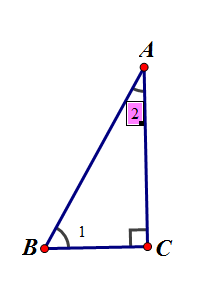

几何画板基础入门教程
作者：TeliuTe 来源：基础教程网
六、文字、标记工具 返回目录 下一课文字工具可以标出字母或输入文字，标记工具可以标记角或边；
1、文字工具
1）点“线段工具”，按住Shift键，画一条水平线段；
2）用选择工具，再选中一个点，点菜单“构造 - 垂线”；
3）点菜单“构造 - 垂线上的点”，调整好位置；
4）再选中垂足的点，选菜单“构造 - 线段”，在垂线上作一条线段，
线段和垂线重合的，所以看不出来，但是确实存在的；
5）选中另外两个点也构造一条线段，从而得到一个直角三角形；
6）在垂线上边点一下，选中垂线，点菜单“显示 - 隐藏垂线”，将辅助线隐藏，注意不要多选其他直线；
7）不能直接隐藏垂线，先构造一条线段，以免隐藏的时候少一条边；
2、文字工具
1）在左边选择文字工具 A；
2）按照字母顺序，瞄准三个顶点，手形鼠标变黑，依次点击三个顶点，自动出现字母；
3）鼠标移到字母上，可以拖动字母改变位置；
4）再次点击顶点，将隐藏字母，双击字母，出来对话框可以修改字母；
3、标记工具
1）左边工具栏，选择“标记工具”一支笔的图标；
2）瞄准直角所在的顶点C，点击向角内拖动，松手后出现直角符号；
3）同样瞄准另外两个点，按住往里拖动，出现角的标记符号；
4）瞄准角的阴影部分，点右键 - 属性 - 透明度，拖动滑块到左边，透明度为0就可以去掉阴影；
5）同样把另外两个角也去掉阴影；
6）再选左边的文字工具，在角里面拖一个文本框出来，输入“1”、“2”；
7）用选择工具，拖动文本框，调整好位置，保存一下文件；

8）用标记工具，标记相同的边，可以在两条边上标一条竖线；
本节学习了文字工具和标记工具的基础知识，如果你成功地完成了练习，请继续学习下一课内容；
本教程由TeliuTe制作|著作权所有
基础教程网：http://teliute.org/
美丽的校园……
转载和引用本站内容，请保留作者和本站链接。